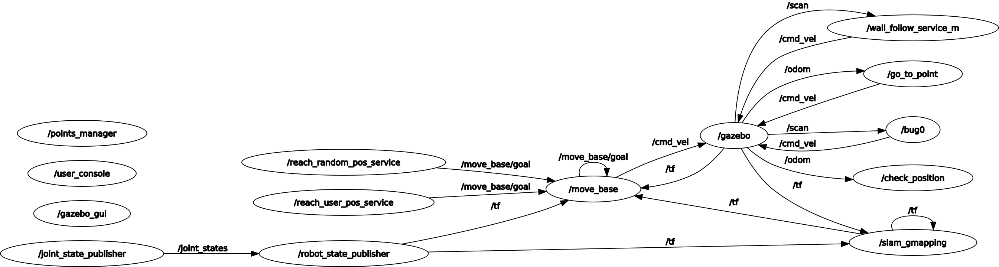

- Generated by
 1.9.1
1.9.1
|
Final Assignment
1.0
Research Track part 1 - Assignment 2 - RobEng A.A. 2020/2021
|
Francesco Ganci - 4143910 - Robotics Engineering - A.A. 2020/2021
Take a look at the video demo of the project!
Doxygen Documentation:
- [Doxygen Documentation here]()
Here are the instructions for setting up the project.
The project is compatible with ROS Noetic. Not yet tested with ROS kinetic: probably, it doesn't work there.
In order to run the project, you need the two packages you can find here. SLAM and GMapping are tools for managing the movement of a robot with noisy odometry: their purpose is to correct odometry in a way that the robot can get its position as precisely as possible.
Copy the packages into the workspace you prefer. use branch : noetic
Also these packages are required. Please install them.
MoveBase is a motion planner: given a goal, it can retrieve a path from the actual position to the desired one, recomputing the path depending on the informations gathered by sensors in conjunction with Slam-GMapping.
Simply install it:
In the repository here you can find a package which contains the data for simulating a robot with disturbed odometry. This package is needed in order to run the simulation in Rviz and Gazebo.
Copy the packages inside the workspace you prefer. use branch : noetic
catkin_makeInside the package, in the folder launch, you can find several launch files. Because of the huge quantity of nodes you have to launch for running the project, i strongly suggest to launch everything from these files.
First of all, launch the simulation environment. You can ignore the large amount of warnings on the console: if Gazebo and Rviz run well, you need nothing else. Otherwise, close everything and relaunch.
Done this, launch another terminal and type this:
This will launch the command line interface and all the other components. See the documentation, section services, for further informations about these components. Remember that you can interact with them via rosservice call if you note something strange during the simulation.
At this point, you can start typing commands. See the documentation, section Command Line Interface, for further infos about the commands. If you don't want to bother in reading documentation, simply type help and start playing with it. Have fun!
The package final_assignment contains:
The project needs the nodes you can find in the final_assignment.launch launch file. Note the structure of this file, splitted in mainly two parts: start of the services, and then start of the command line interface.
This node implements the wall_follow behaviour.
Services exposed:
Topics:
Parameter Server:
A "go-to-point" behaviour is realized here: the robot moves straight towards the point, choosing a proper twist. It cannot deal with obstacles.
Services exposed:
Topics:
Parameter Server:
This node provides some useful functionalities for understanding the progress of the motion towards the goal. Moreover, it helps in easily detecting the position of the robot in the environment. It implements in one place oe functionality that is of use of many nodes in the project.
Services exposed (see services documentation):
Topics:
This simple node contains the allowed positions for the robot. It can choose one among them, and check if a given position is contained in the set.
Services exposed (see services documentation):
It implements a background task. The node ciclically asks the service */get_point* for a target, then reaches it using the move_base motion planning algorithm. This node can be turned on and off. I strongly suggest you to read the documentation about it, in order to better understand how it is designed and why in that way. See both reach_random_pos_service.py and user_console.py.
Services exposed (see services documentation):
Services used:
Topics:
It implements a blocking service. The node takes one target from the request, then sends it to bug0 and tries and reach it using the move_base motion planning algorithm.
Services exposed (see services documentation):
Topics:
This node, based on the version kindly provided by prof. Carmine Recchiuto, implements a motion planning algorithm alternative to move_base. This node uses the two services go_to_point_service_m.py and wall_follow_service_m.py in order to reach the goal, as in a blind search.
Services exposed (see services documentation). Note that bug0.py and reach_random_pos_service.py provide a similar interface.
Services used:
Topics:
Parameter Server:
It implements a command line interface. See documentation, section s, for further information about how to use it.
Services in use:
Here is the rosgraph of the project:
